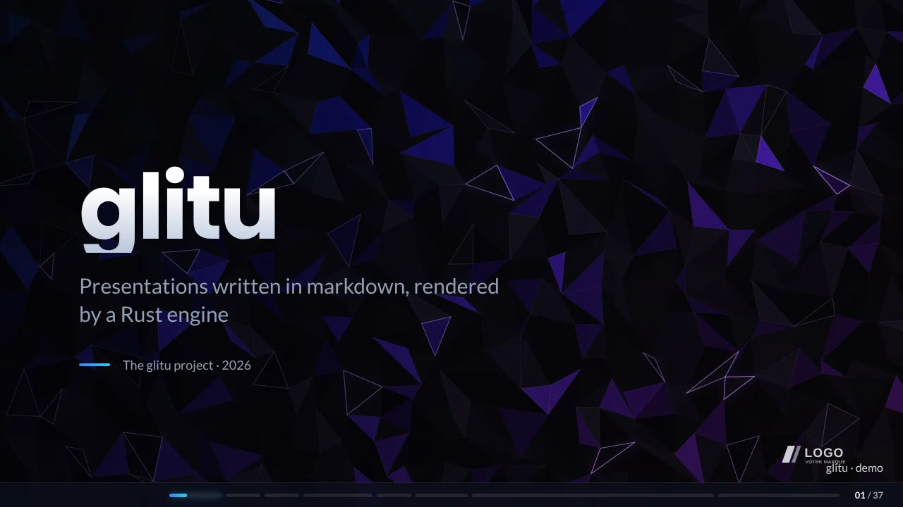
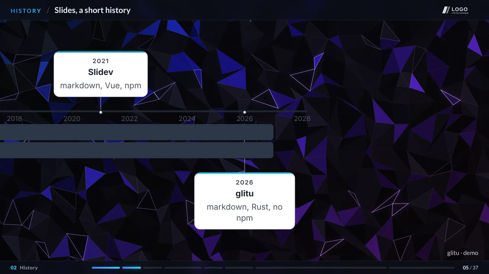
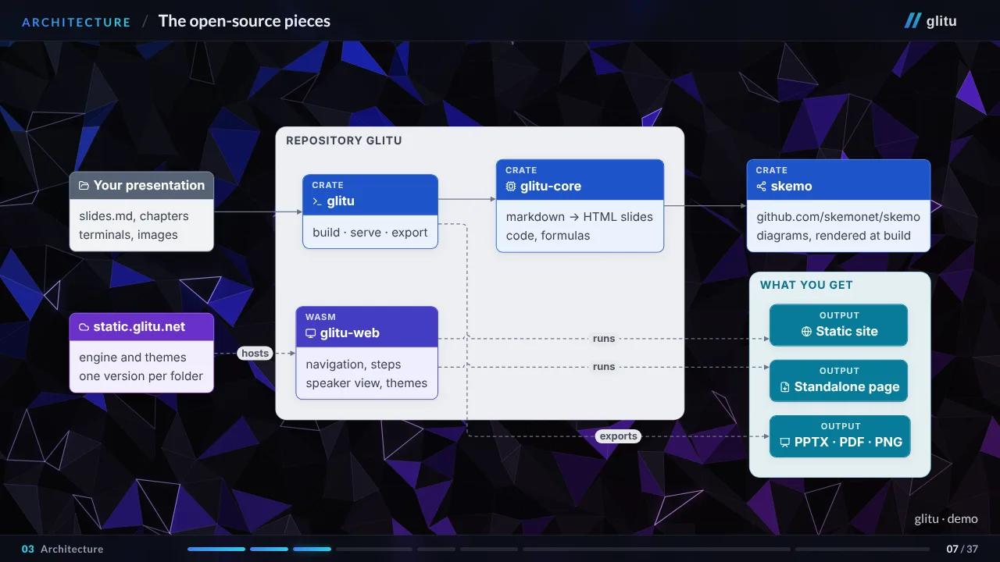
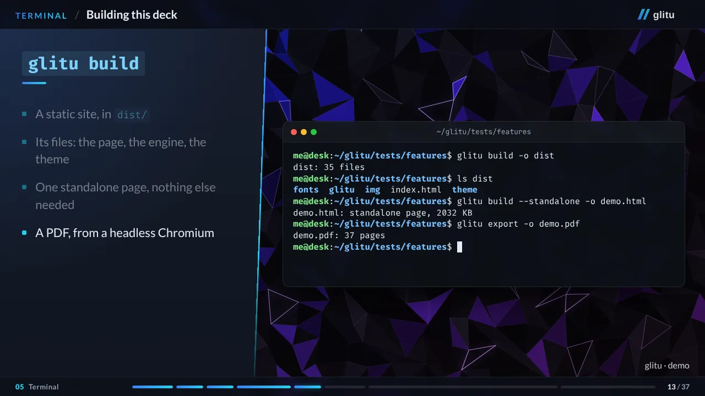

One slides.md holds the text, the diagrams, the code shown on screen and the
terminal recordings. glitu builds it into a page; its WebAssembly engine presents it.
No npm, no Node.

A single standalone page: engine, theme and fonts inside. Press → or space to advance, S for the speaker view, ? for every key.



The same source becomes a site, a page to carry around, a light page or a file.
glitu build -o dist, for any web server; glitu serve reloads at every change.
--standalone: one HTML file, opens with a double click, needs no network.
--web: the engine and the theme come from the web, each file checked by its hash.
glitu export: editable PowerPoint, vector PDF, PNG images.
Diagrams are drawn by skemo, fetched by Cargo.
# once rustup target add wasm32-unknown-unknown git clone https://github.com/skemonet/glitu && cd glitu cargo build --release # the demo, at http://localhost:8000 target/release/glitu serve tests/features/slides.md